Qué es un motor de videojuegos, cómo se estructura un proyecto y por qué en Godot todo es un nodo.
“Hoy no van a aprender todo, pero sí van a entender cómo pensar dentro del motor.”
Antes de empezar
Qué necesitás para la clase de hoy
Traé
Tu notebook (cualquiera sirve, Godot es liviano)
Cargador y ganas de romper cosas
Conexión para descargar el editor
Descarga
Sitio oficial: godotengine.org
Versión Godot 4.x — estándar (GDScript)
Sin instalador, sin cuenta: se descomprime y abre
Requisitos mínimos muy bajos: el editor pesa menos de 100 MB y corre en máquinas modestas.
Apertura
Qué vamos a hacer hoy
Entender qué es un motor de videojuegos
Instalar Godot y recorrer su interfaz
El concepto clave: nodos y escenas
Armar tu primera escena con nodos
Objetivo del día: perder el miedo al editor y entender el modelo mental de Godot.
Godette, la mascota de Godot — nos acompaña toda la diplomatura.
Concepto
¿Qué es un motor de videojuegos?
Un software que reúne, en un solo entorno, todo lo necesario para crear un juego: gráficos, físicas, audio, entrada del jugador, animación, scripting y exportación.
Sin motor
Escribir código para dibujar un solo píxel
Detectar colisiones entre dos rectángulos
Reproducir un sonido desde cero… lleva años
Con motor
Todo eso ya está resuelto
Te concentrás en el juego en sí
Reglas, niveles, la experiencia
🍳 Analogía: un motor es una cocina equipada. Podés fabricar tu horno y tus cuchillos… o entrar a una cocina lista y dedicarte a cocinar.
Panorama
Motores populares
Unity
C#, muy usado en la industria. Gratis hasta cierto nivel de ingresos.
Unreal
Gráficos AAA, C++ y Blueprints. Royalties sobre ingresos.
GameMaker
Orientado a 2D, con su lenguaje propio (GML).
Godot ★
Open source, gratis, sin royalties. El que vamos a usar.
Nuestra elección
¿Por qué Godot para empezar?
Gratis y libre
Open source, sin royalties ni licencias. Nada te frena para publicar.
Liviano
Corre en máquinas modestas. El editor pesa menos de 100 MB.
Curva amable
Su sistema de nodos es uno de los modelos mentales más claros que existen.
Filosofía de diseño muy particular: todo es un nodo. Lo vemos en detalle más adelante.
Instalación
Descarga y primer contacto
Se descarga de godotengine.org. Es un único ejecutable: no hay instalador, ni registro, ni cuenta. Lo descomprimís y lo abrís.
Versión / sabor
Qué es
Cuándo
Godot 4.x
Versión actual, mejor render 3D y nuevas funciones
✅ La que usamos
Godot 3.x
Versión anterior, todavía soportada
Mucho material online sigue en 3.x (la sintaxis cambió)
Estándar (GDScript)
Lenguaje propio, parecido a Python
✅ Recomendado para empezar
.NET / C#
Además permite programar en C#
Más adelante, si hace falta
Práctica en clase
Crear tu primer proyecto
Abrir Godot → aparece el Project Manager
Clic en New Project
Elegir nombre y carpeta
Dejar el resto por defecto → Create & Edit
Eso te lleva al editor 🎉
El Project Manager lista tus proyectos existentes y permite crear nuevos.
El Project Manager es donde se listan tus proyectos y se crean nuevos.
La ventana del editor
Recorrido por la interfaz
La ventana de Godot tiene cuatro zonas principales: Escena (arriba izq.), FileSystem (abajo izq.), Viewport (centro) e Inspector (derecha).
Interfaz
Los cuatro paneles principales
🎬 Viewport (centro)
La ventana grande donde “ves” tu juego. Pestañas arriba para 2D, 3D y editor de Script.
🌳 Escena (arriba izq.)
La jerarquía de nodos en árbol. El panel más importante de Godot — lo profundizamos hoy.
📁 FileSystem (abajo izq.)
Todos los archivos del proyecto. Las rutas internas empiezan con res://.
🔧 Inspector (derecha)
Las propiedades del nodo seleccionado: posición, rotación, color, tamaño… sin escribir código.
Sobre todo Project → Project Settings (resolución, controles, capas físicas)
👐 Práctica guiada
Agregar un Sprite2D con el icon.svg del proyecto
Verlo aparecer en el Viewport
Mover sus propiedades en el Inspector
Observar cómo se refleja el cambio
Bloque clave
El sistema de nodos
Un nodo es la unidad mínima de funcionalidad en Godot. Cada nodo hace una cosa específica.
Mostrar una imagen
Reproducir un sonido
Detectar colisiones
Recibir input del jugador
Cientos de tipos de nodos, cada uno especializado en una tarea.
Nodos
Ejemplos, y por qué son como Lego
Sprite2D
Muestra una imagen 2D
Camera2D
Define qué parte se ve
AudioStreamPlayer
Reproduce un sonido
Label
Muestra texto
CharacterBody2D
Cuerpo físico controlable
Timer
Dispara un evento cada X tiempo
🧱 Analogía: piezas de Lego
Cada pieza es simple y hace poco por sí sola. Lo interesante es combinarlas.
Un personaje jugable no es un nodo gigante con todo adentro, sino un cuerpo físico que tiene como hijos un sprite, un colisionador, una cámara, un sonido de pasos…
Segundo concepto clave
Escena = un árbol de nodos
Una Escena es un árbol de nodos guardado como archivo (.tscn). No es solo “un nivel”: es cualquier cosa que quieras tratar como unidad reusable.
Un nivel · el menú principal
Un enemigo · una bala
El HUD · hasta un solo botón
Ejemplo: escena Player
Player (CharacterBody2D)
├── Sprite2D
├── CollisionShape2D
├── Camera2D
└── AudioStreamPlayer
Toda escena tiene un nodo raíz, y de ahí cuelgan los demás.
El gran truco de Godot
Las escenas son anidables
Una escena puede instanciarse dentro de otra como si fuera un solo nodo. Nivel1 puede contener la escena Player y diez instancias de Enemigo.
Si modificás la escena Enemigo, todas las instancias en todos los niveles se actualizan solas. En Godot, la escena ES el prefab — no hay distinción (Unity → prefabs, Unreal → blueprints).
Reglas de la jerarquía
El hijo hereda la transformación del padre: movés el padre, se mueven los hijos
El orden importa en 2D: los de más abajo se dibujan encima
Cualquier nodo → Save Branch as Scene
Familias de nodos
¿Dónde vive tu juego?
Antes de elegir nodos hay que elegir en qué espacio ocurre el juego. Godot tiene tres sistemas separados —y un cuarto que en realidad es un truco.
🟦 2D
Un plano. Dos ejes: X e Y. Todo son imágenes planas ordenadas por capas.
Node2D
🟨 2.5D
No es un sistema: es una ilusión. Se ve en una dimensión y se juega en otra.
2D o 3D, según el truco
🟥 3D
Un volumen. Tres ejes: X, Y y Z. Mallas, luces, cámara con perspectiva.
Node3D
🟩 UI
No vive en el mundo: vive en la pantalla. Vida, menús, botones, HUD.
Control
Casi todo juego usa al menos dos a la vez: un mundo (2D o 3D) + una capa de UI encima.
Un repaso rápido
El plano cartesiano
Antes de hablar de 2D, el ladrillo de todo: es el sistema para ubicar un punto con dos números. Lo inventó René Descartes en el siglo XVII.
Dos rectas cruzadas: el eje X (horizontal) y el eje Y (vertical).
Se cruzan en el origen(0, 0).
Cualquier punto es un par (x, y): cuánto a los lados, cuánto arriba/abajo.
Los ejes parten el plano en 4 cuadrantes.
Un juego 2D es, literalmente, cosas puestas en este plano. La posición de todo — Mario, una moneda, un enemigo — es un (x, y).
El plano cartesiano de siempre: origen al centro, la Y sube. En la próxima vemos por qué en los juegos cambia.
2D
Qué significa, en serio, “2D”
2D = dos dimensiones = dos ejes. Todo lo que existe en el juego se ubica en un plano cartesiano: cada objeto tiene una posición (x, y) y nada más.
⚠️ En pantalla el Y crece hacia abajo y el origen (0,0) está arriba a la izquierda — herencia de cómo los monitores dibujan, línea por línea, de arriba hacia abajo. Es al revés que en la clase de matemática.
La unidad es el píxel.
No hay profundidad real: quién tapa a quién se decide por el orden de dibujo, no por distancia.
El plano de un juego 2D: el origen arriba a la izquierda y el eje Y apuntando hacia abajo.
2D · juegos reales
Plano no quiere decir aburrido
Con dos ejes se pueden simular puntos de vista muy distintos. La cámara no cambia: cambia cómo dibujás.
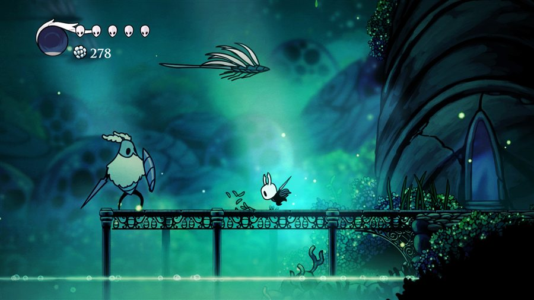
assets/tipos/2d-lateral.jpg
Vista lateral (side-view)X = correr, Y = saltar. Hay gravedad. Hollow Knight · Celeste · Super Mario Bros.
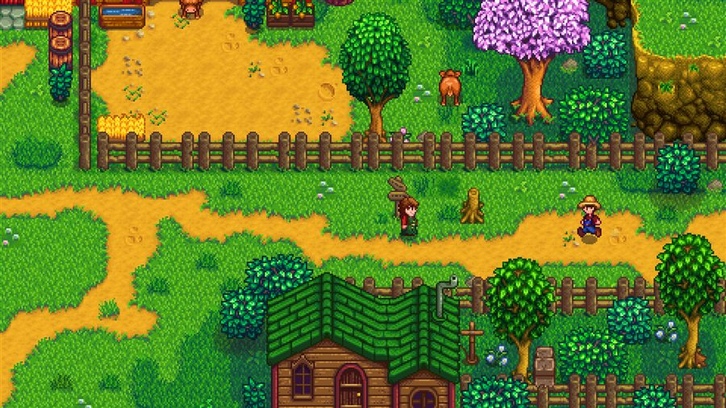
assets/tipos/2d-cenital.jpg
Vista cenital (top-down)Mirás desde arriba: X e Y son el piso. Stardew Valley · Zelda clásico · Brotato
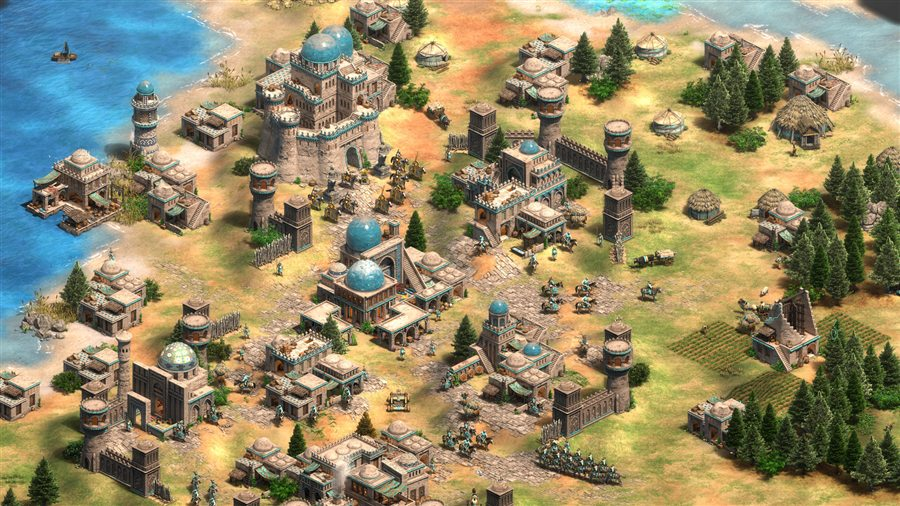
assets/tipos/2d-isometrico.jpg
IsométricoSigue siendo 2D: el volumen está pintado en el sprite. Age of Empires II · Hades · Diablo II
En los tres casos el motor sólo maneja (x, y). La “profundidad” del isométrico es dibujo y orden de capas: puro arte.
2D · en el motor
Cómo se ve el 2D en Godot
Nodo
Para qué
Node2D
Base de todo lo 2D: aporta posición, rotación y escala en el plano
Sprite2D
Dibuja una imagen
AnimatedSprite2D
Dibuja una secuencia de imágenes (animación cuadro a cuadro)
CharacterBody2D
Cuerpo con física, pensado para el personaje
TileMapLayer
Pinta el escenario con una grilla de mosaicos
Camera2D
El recorte del plano que se ve en pantalla
🔍 Detalles que te van a morder
Los nodos 2D terminan en 2D. Si el nombre no lo tiene, casi seguro no es 2D.
El orden en el árbol es el orden de dibujo: el hermano de más abajo se dibuja encima. ¿El personaje quedó tapado por el piso? Movelo abajo en la lista.
Para saltear esa regla existe z_index.
Todos heredan de CanvasItem: por eso comparten modulate (tinte), visible y las capas de dibujo.
3D
Sumar un eje lo cambia todo
3D agrega el eje Z: la profundidad. Cada objeto vive en (x, y, z) dentro de un volumen, y la cámara se encarga de proyectar ese volumen sobre tu pantalla, que sigue siendo plana.
En Godot, Y apunta hacia arriba (al revés que en 2D) y −Z es “hacia adelante”.
La unidad ya no es el píxel: por convención 1 unidad = 1 metro.
Los objetos no son imágenes: son mallas (vértices → triángulos → superficie) con un material encima (color, textura, brillo).
Sin luz no se ve nada. Aparecen luces, sombras y entorno.
La rotación pasa de un número a tres (cabeceo, giro, alabeo).
Tres ejes, Y hacia arriba. El cubo tiene volumen real: la cámara decide cómo se ve.
3D · juegos reales
Mundos con volumen
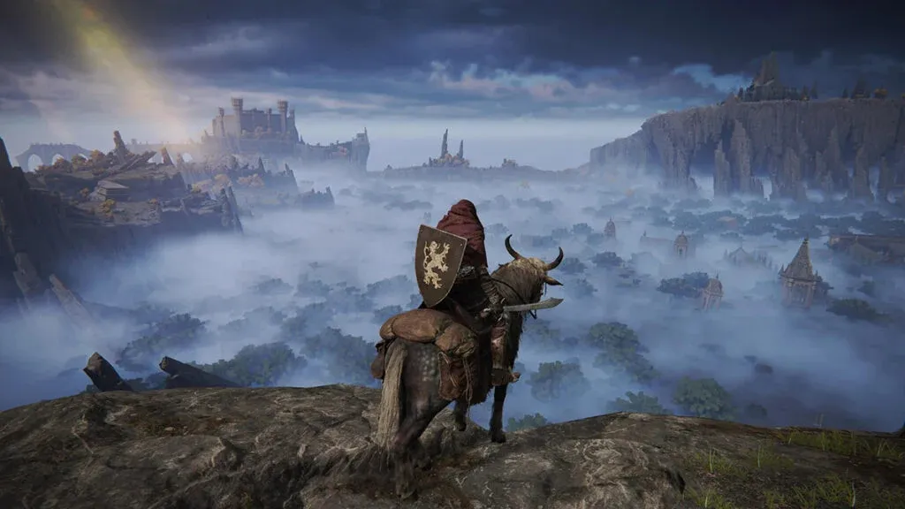
assets/tipos/3d-elden-ring.jpg
Tercera personaElden Ring — la cámara va detrás del personaje: lo ves a él y al mundo
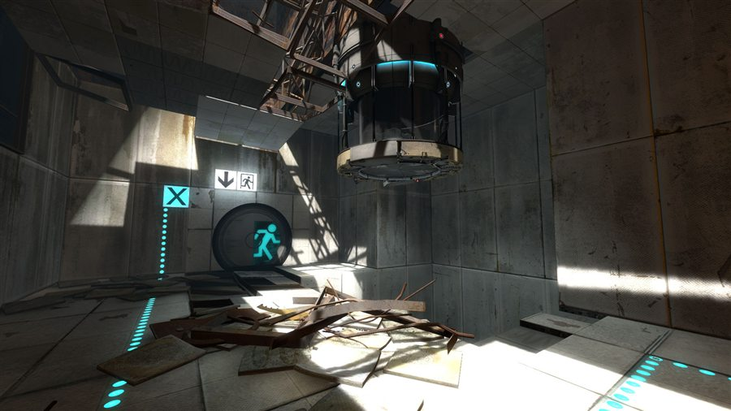
assets/tipos/3d-portal.jpg
Primera personaPortal 2 — la cámara es los ojos del personaje: no lo ves nunca
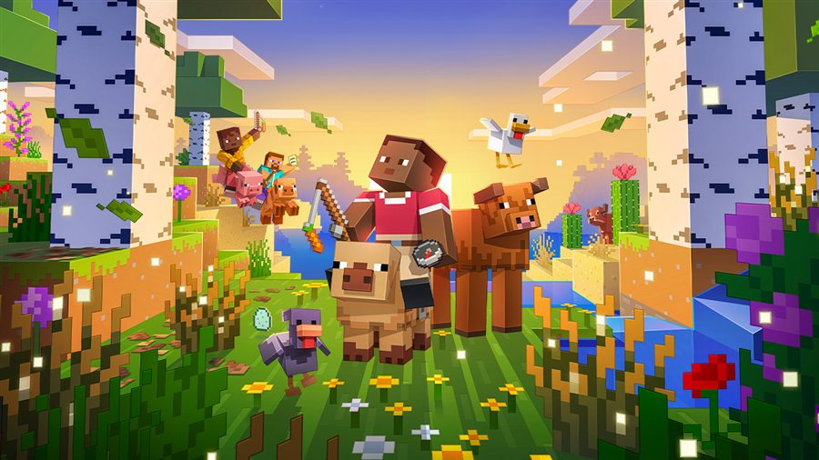
assets/tipos/3d-minecraft.jpg
3D no realistaMinecraft — 3D total, pero con estética de bloques y texturas mínimas
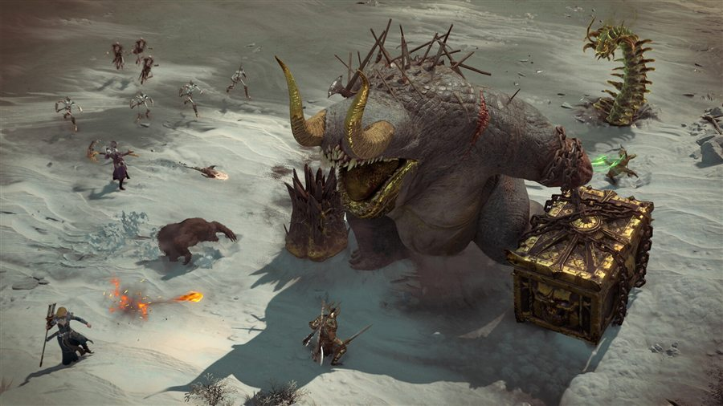
assets/tipos/3d-diablo4.jpg
3D con cámara fijaDiablo IV — parece isométrico, pero mirá las sombras: es 3D real
Costo real del 3D: modelado, texturizado, rigging, animación, iluminación y optimización. Es mucho más trabajo por objeto — por eso arrancamos en 2D.
3D · en el motor
Cómo se ve el 3D en Godot
Nodo
Para qué
Node3D
Base de todo lo 3D: posición, rotación y escala en el volumen
MeshInstance3D
Dibuja una malla (el equivalente al Sprite2D)
Camera3D
El punto de vista, con su campo de visión (FOV)
DirectionalLight3D
Una luz tipo sol; también hay Omni y Spot
CharacterBody3D
El personaje con física, ahora en tres ejes
WorldEnvironment
Cielo, niebla, brillo, corrección de color
🔍 Lo que cambia respecto de 2D
Los nodos terminan en 3D. Sprite2D y Sprite3Dno se mezclan: cada mundo tiene su rama.
Ya no importa el orden del árbol para dibujar: el motor usa la distancia a la cámara (buffer de profundidad).
La escena arranca negra hasta que agregás una luz y una cámara. No está rota: le falta iluminación.
El Viewport tiene su propia pestaña 3D arriba, con controles de órbita y navegación.
2.5D
2.5D: se ve en una dimensión, se juega en otra
No es un formato técnico ni un botón del motor: es una decisión de presentación. Hay dos caminos, y van en direcciones opuestas.
A · Mundo 3D, juego 2D
Todo está modelado en 3D —con luces, sombras y cámara real— pero el jugador sólo se mueve en dos ejes. Ganás la belleza del 3D con la simpleza de diseño del 2D.
Ejemplos:Little Nightmares, Trine, New Super Mario Bros. U, Donkey Kong Country Returns.
B · Mundo 2D que finge volumen
Imágenes planas acomodadas para simular profundidad: perspectiva isométrica, capas de fondo que se mueven a distinta velocidad (parallax), o sprites planos que siempre miran a la cámara.
Ejemplos:DOOM (1993), Don't Starve, Octopath Traveler (HD-2D), Age of Empires II.
¿Por qué tanto juego elige 2.5D? Cuesta menos producir, se lee mejor (una cámara previsible no te marea) y diseñar niveles en dos ejes es mucho más simple.
2.5D · juegos reales
El truco, en cuatro juegos
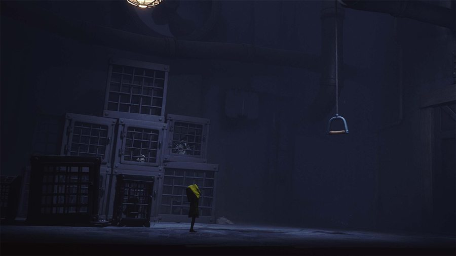
assets/tipos/25d-little-nightmares.jpg
Little NightmaresEscenario 3D con luces reales; el personaje avanza por un carril de dos ejes.
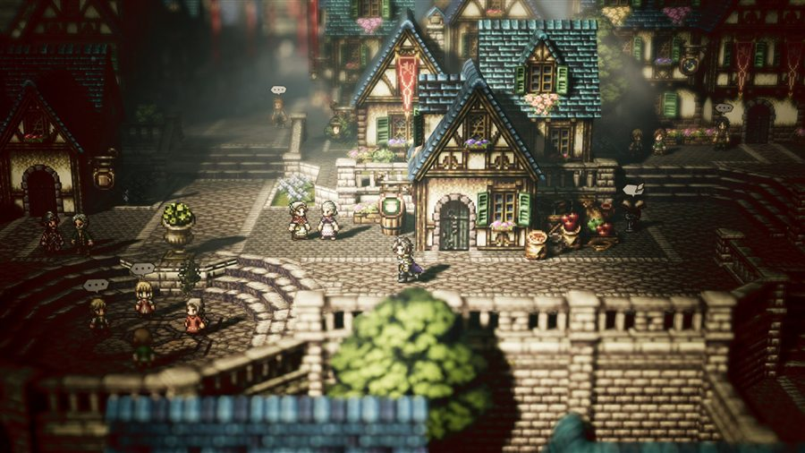
assets/tipos/25d-octopath.jpg
Octopath Traveler“HD-2D”: sprites planos parados dentro de un escenario 3D, con desenfoque y profundidad.
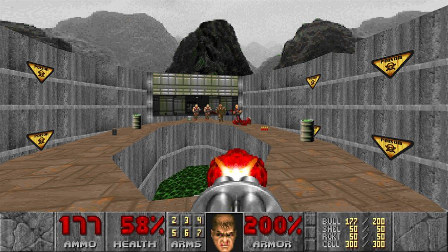
assets/tipos/25d-doom.jpg
DOOM (1993)Los enemigos son imágenes planas que siempre giran hacia vos. Nunca les ves la espalda.
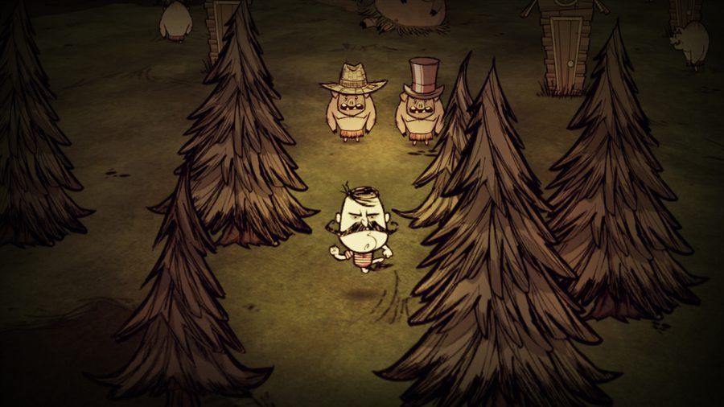
assets/tipos/25d-dont-starve.jpg
Don't StarvePersonajes y objetos 2D dibujados a mano, ubicados en un mundo con profundidad.
Pregunta útil para clasificar cualquier juego: ¿en cuántos ejes puede moverse el jugador? Eso define el género técnico; lo demás es cómo se ve.
2.5D · en el motor
Cómo se arma un 2.5D en Godot
No hay un modo “2.5D”. Elegís uno de los dos mundos y lo disfrazás.
Escena 3D, cámara plana
Escena 3D normal + Camera3D con Projection: Orthogonal (se apaga la perspectiva) y el movimiento del CharacterBody3D bloqueado en un eje.
estilo Little Nightmares
Sprites parados en 3D
Sprite3D / AnimatedSprite3D con Billboard: Enabled dentro de una escena 3D: la imagen plana siempre rota hacia la cámara.
estilo HD-2D / DOOM
Todo 2D con falsa profundidad
Parallax2D para capas de fondo a distinta velocidad + Y-Sort para que lo que está más abajo se dibuje encima. TileMapLayer tiene modo Isometric.
estilo Hades / Stardew
Regla práctica: si el arte es plano → hacelo en 2D. Si el arte tiene volumen y luces → hacelo en 3D y limitá el movimiento. Nunca mezcles los dos árboles.
UI
La UI no está en el mundo: está en la pantalla
La interfaz es todo lo que le comunica información al jugador, y no forma parte del terreno donde ocurre la acción. Si la cámara se mueve, el mundo se corre; la UI se queda quieta.
HUD (durante el juego): vida, munición, puntaje, minimapa, misión activa.
Pantallas: menú principal, pausa, inventario, opciones, game over.
Su sistema de coordenadas es la pantalla, medida en píxeles — y tiene que sobrevivir a cualquier resolución.
🧠 La UI es diseño de información
Las tres preguntas de siempre:
¿Qué necesita saber el jugador para tomar la próxima decisión?
¿Cuándo? ¿Todo el tiempo, o sólo cuando importa?
¿Cuánto ruido estoy dispuesto a meterle a la imagen para decírselo?
Esa tercera pregunta es exactamente la que separa la UI diegética de la no diegética.
UI · el concepto clave
Diegética vs. no diegética
Diégesis es el mundo de la ficción. La pregunta es simple: ¿el personaje puede ver eso que estás viendo vos?
assets/tipos/ui-dead-space.jpg
Diegética — Dead SpaceMirale la columna: esa barra luminosa es su vida, y la munición se proyecta sobre el arma. Ni un píxel de HUD flotando.
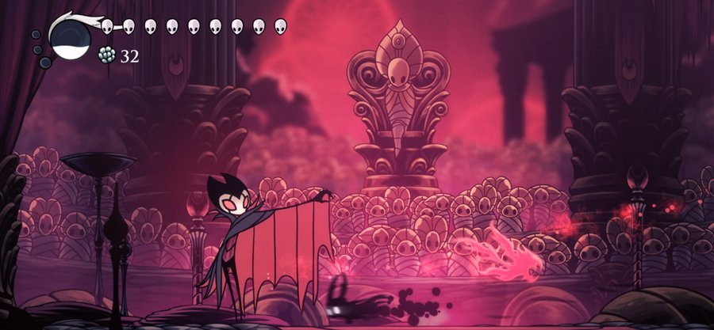
assets/tipos/ui-no-diegetica.jpg
No diegética — Hollow KnightArriba a la izquierda: máscaras de vida y contador de geo, pegados a la pantalla. El personaje no los ve; existen sólo para vos.
UI · el modelo completo
En realidad son cuatro tipos
Se cruzan dos preguntas: ¿pertenece a la ficción? y ¿está dibujada en el mundo o pegada a la pantalla?
Tipo
¿Ficción?
¿Dónde?
Ejemplos
Diegética
Sí
En el mundo
Dead Space (vida en la espalda) · Far Cry 2 (mapa de papel en la mano) · Metro Exodus (reloj de muñeca) · Alien: Isolation (detector de movimiento)
No diegética
No
En la pantalla
Hollow Knight (máscaras de vida) · League of Legends (minimapa) · el puntaje de Tetris
Espacial
No
En el mundo
Siluetas de compañeros a través de las paredes en Left 4 Dead · nombres flotando sobre los NPC en WoW · el cartel “E para abrir” pegado a la puerta
Meta
Sí
En la pantalla
Salpicaduras de sangre cuando te disparan en Call of Duty · gotas de lluvia sobre “el lente” · estática cuando te detectan
Ningún juego elige uno solo: los mezclan. Más diegético = más inmersión, pero menos legible y más caro de producir. Es un intercambio, no una escala de calidad.
UI · en el motor
Cómo se arma la UI en Godot
Nodo
Para qué
Control
Base de toda la UI. No usa posición suelta: usa un rectángulo con anclas
CanvasLayer
Capa aparte que no se mueve con la cámara. Acá va tu HUD
Label · Button
Texto y botones
TextureProgressBar
La clásica barra de vida con arte propio
VBox/HBoxContainer
Acomodan a los hijos solos: la UI sobrevive a cualquier resolución
🎭 ¿Y la UI diegética?
No se hace con nodos de UI: se hace con nodos del mundo.
En 2D: colgá un Label o un Sprite2D como hijo del personaje —fuera del CanvasLayer— y se moverá con él.
En 3D: Label3D o Sprite3D pegados al modelo.
Para una pantalla dentro del juego (un monitor, un celular): armás la UI con Control dentro de un SubViewport y usás esa textura en un MeshInstance3D.
Resumen
Los tres sistemas, lado a lado
🟦 2D
🟥 3D
🟩 UI
Nodo base
Node2D
Node3D
Control
Ejes
X, Y — Y hacia abajo
X, Y, Z — Y hacia arriba
X, Y de la pantalla
Unidad
píxel
metro (1 unidad)
píxel de pantalla
Qué dibuja
Sprite2D (imagen)
MeshInstance3D (malla)
Label, Button…
Cámara
Camera2D
Camera3D (con FOV)
ninguna: CanvasLayer
Profundidad
orden en el árbol / z_index
distancia real a la cámara
orden de las capas
Se nota porque…
termina en 2D
termina en 3D
no lleva sufijo
Manos a la obra
Ejercicio: ver la diferencia con los ojos
En una escena con raíz Node2D, agregá un Sprite2D y movelo en el Viewport. Mirá cómo cambia position en el Inspector: Y sube el número al bajar.
Agregá un Button. Fijate que aparece en otro lugar y que su panel de propiedades es completamente distinto: tiene anclas, no posición libre.
Agregá un Camera2D y movelo: el sprite se corre… y el botón no.
Meté el botón dentro de un CanvasLayer y confirmá que ahí sí queda clavado a la pantalla, pase lo que pase con la cámara.
🎯 Lo que tienen que poder responder
¿Por qué el botón no se movió con la cámara?
¿Ese botón es UI diegética o no diegética?
¿Cómo lo harían diegético, sin cambiar el nodo por otro?
🕹️ Extra para casa: elegí un juego que te guste, sacale una captura y marcá cada elemento de UI como diegético, no diegético, espacial o meta.
Antes del código
¿Qué es el código?
Código son instrucciones que le damos a una computadora para que haga algo.
El problema es que no hablamos el mismo idioma: nosotros pensamos en ideas («que salte»), la máquina solo ejecuta operaciones exactas. Para salvar esa distancia existen los lenguajes de programación.
Un lenguaje de programación es un idioma intermedio: lo suficientemente humano para que podamos escribirlo, lo suficientemente preciso para que la máquina lo ejecute.
🗣️ Hay muchos, y se parecen bastante
Python
Datos, ciencia, automatización
JavaScript
La web
C#
Unity, aplicaciones
C++
Unreal, motores, performance
GDScript
Godot — el nuestro
Cambia cómo se escribe, no cómo se piensa. Aprender a programar es aprender a resolver problemas; el idioma después se cambia sin tanto drama.
Las reglas del idioma
Sintaxis y semántica
Todo lenguaje tiene reglas de forma y de significado. La computadora no interpreta intenciones: hace lo que escribiste, no lo que quisiste decir.
✍️ Sintaxis — cómo se escribe
Los dos puntos, los paréntesis, la indentación. Si están mal, el programa ni siquiera arranca.
# ✗ falta el ":" del finalfunc_ready()
# ✓ ahora sífunc_ready():
El error fácil: Godot lo marca en rojo antes de correr.
🧠 Semántica — qué significa
Lo que la instrucción hace. Puede estar bien escrita y no ser lo que querías.
# Las dos son válidas. Pero la Y# crece hacia ABAJO…
position.y += 50# ✗ "salta" al piso
position.y -= 50# ✓ salta de verdad
El error difícil: nadie te avisa. Solo lo ves al jugar.
De la idea a los números
El salto de Mario
«Saltar» es una idea nuestra. Para la computadora no existe: hay que traducirla a números.
Mario es un objeto con una posición: x (horizontal) e y (vertical). El salto no es más que modificar esos dos valores, muchas veces por segundo.
La y sube y después vuelve a bajar → el arco
La x sigue avanzando si venía corriendo → el alcance
Mario no salta: sus coordenadas cambian. El salto lo ponemos nosotros al mirarlo.
assets/tipos/mario-salto.png
Super Mario Bros. (NES, 1985) — World 1-1Congelado, es solo un sprite en un par de coordenadas. El salto existe porque esos dos números cambian frame a frame.
Adelanto
¿Y el código? Un vistazo a GDScript
Los nodos se pueden programar con GDScript, un lenguaje propio muy parecido a Python. No hace falta memorizarlo hoy — solo ver cómo se ve.
_ready() corre al aparecer el nodo
_process() corre en cada frame
Se engancha un script a cualquier nodo
extendsSprite2D# Corre una vez, al empezarfunc_ready():
print("¡Hola, Godot!")
# Corre en cada framefunc_process(delta):
position.x += 100 * delta
Manos a la obra
Mini práctica integradora
Algo simple pero poderoso: crear una escena con…
1 · Nodo raíz
Un Node2D como base
→
2 · Elemento visual
Un Sprite2D
→
3 · Botón UI
Un Button
No importa que sea básico. Importa que creen una escena, usen nodos y vean la interfaz en acción.
Cierre
Lo que nos llevamos de hoy
Un motor es una caja de herramientas integrada
Godot tiene 4 paneles: Escena, FileSystem, Inspector, Viewport
Todo es un nodo; los nodos forman escenas; las escenas se anidan
Tres sistemas separados: 2D (plano, píxeles), 3D (volumen, metros) y UI (pantalla)
2.5D no es un sistema: es un disfraz sobre uno de los dos
La UI puede ser diegética (existe en la ficción) o no diegética (existe sólo para el jugador)
📝 Tarea para la próxima
Crear un proyecto nuevo
Agregar una escena con raíz Node2D
Sumar al menos 3 tipos de nodos hijos
Mover, romper, deshacer, leer el Inspector
No tiene que hacer nada funcional: solo familiarizarse con el editor.
Para seguir
Recursos y próximos pasos
Documentación
docs.godotengine.org Guía oficial, completísima y en varios idiomas.
Descargar
godotengine.org Godot 4.x estándar. Traelo instalado para la próxima.
Comunidad
Discord y foros oficiales. Miles de tutoriales en YouTube (ojo con la versión).